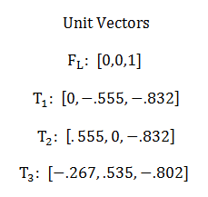
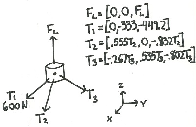
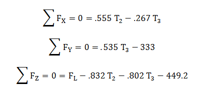
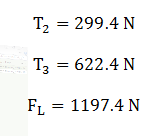

Concurrent Forces
Two or more forces are concurrent if the lines of action of those forces meet at a single point. If all forces acting on an object are concurrent with one another, the system is said to be a concurrent force system.
Solving the Equations of Static Equilibrium for Concurrent Force Systems:
In a concurrent force system the moment equilibrium equations will all simplify to zero equals zero. Because all forces act through a single point, we can take the moments about that point where all forces intersect. Since a moment is equal to F x d and d equals zero at the point of intersection, the moment about that point will be equal to zero. This means that for concurrent force systems one can only use the force equilibrium equations to solve for unknown variables.
Worked Problems
Worked Problem 1:
A hot air balloon is anchored by three cables. The tension in one of these cables is known. Find the tension in the other two anchor cables and the lift force the balloon is exerting.
|
Work
|
Comments |
|

|
To simplify later calculations we first find unit vectors in the direction of each of the forces. We use some simple geometry to find unit vectors (vectors with a magnitude of 1) in the direction of each of the four forces. |
|

|
We next draw out the free body diagram of the basket of the hot air balloon. All forces are assumed to act through the center of this basket, making this a concurrent force system. We multiply the magnitude of the forces (which are unknown except for T1) to get each of the force vectors in component form. |
|

|
Next we write out the equations of static equilibrium. For a concurrent force system, we only use the force equations, not the moment equations. Also, with the force vectors already in component form, all we have to do for the force equations is to add up all the components of the force vectors for each respective coordinate axis. |
|

|
Finally, with three equations and three unknowns, we simply use algebra to solve for each of the unknowns. |
 |
| Author: Jacob Moore has liscenced this work under a Creative Commons Attribution-NonCommercial 3.0 Unported License. |